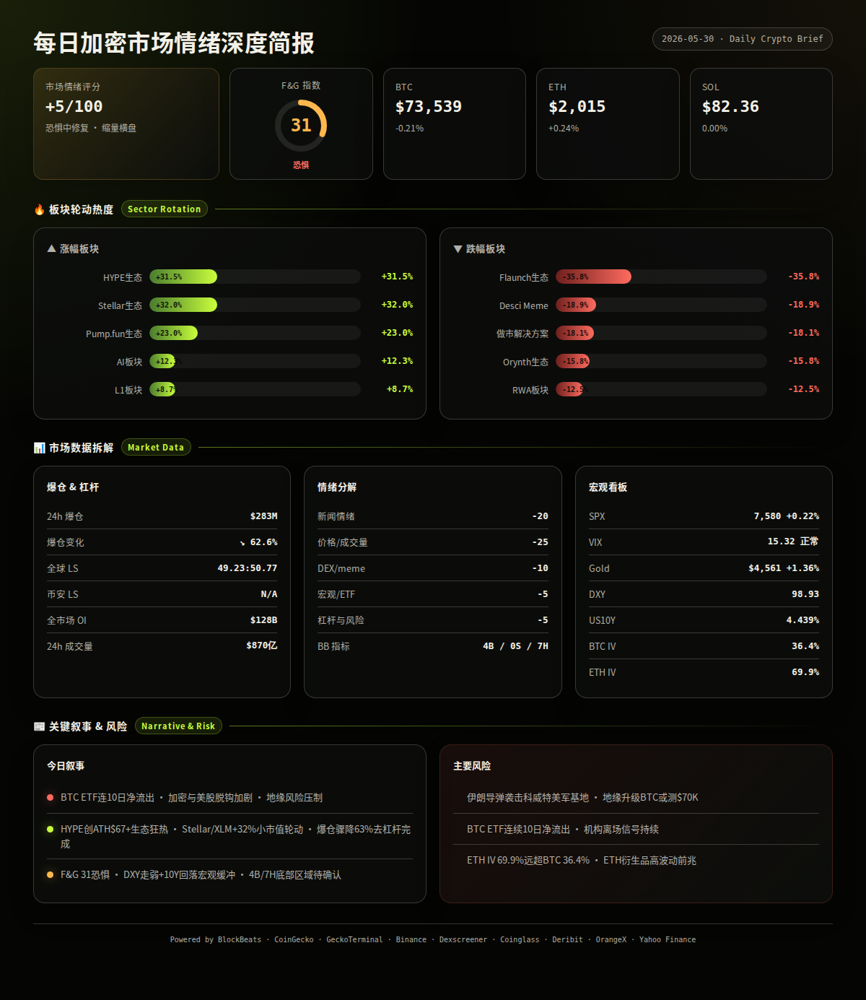
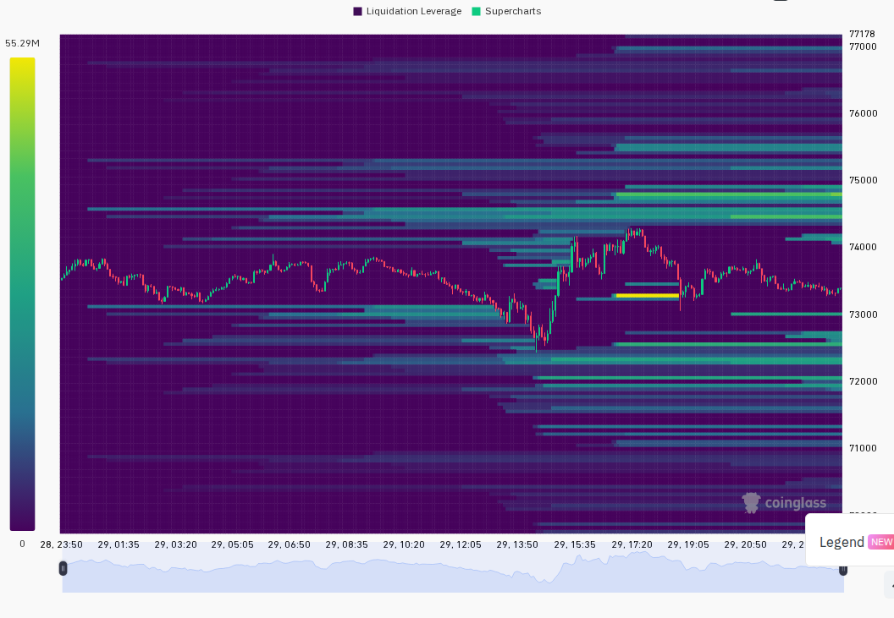
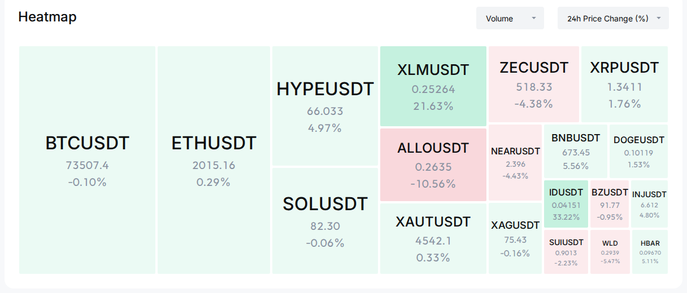

每日加密市场情绪深度报告
加密市场在美股创历史新高的背景下继续与美股脱钩，BTC维持73,500美元附近弱势盘整。主导叙事为Hyperliquid/HYPE生态狂热（ATH突破$67）+ 地缘政治不确定性（伊朗导弹袭击科威特美军基地）的双重拉扯。BTC ETF连续第10日净流出，市场情绪偏恐惧，但DXY走弱与美国10Y收益率下行提供宏观缓冲。
24h变化: 情绪 31恐惧(OrangeX) | BTC ↘0.21% | ETH ↗0.24% | SOL 0.00% | VIX 15.32(正常) | 成交量 ↘5% | DXY ↘0.08% | 爆仓 ↘62.55% (multi-source)
BTC / ETH / SOL
信息 1: 美国现货BTC ETF昨日净流出1.253亿美元，为连续第10个交易日净流出，机构持续减仓信号明显。但同时IBIT资产管理规模创纪录达540亿美元，BlackRock产品吸引力不减。 (BlockBeats)
信息 2: 一位以太坊OG在过去一周内卖出近65,000 ETH，套现约1.36亿美元，疑似Bitmine地址同日再次增持25,000 ETH（约5,056万美元），形成多空分歧格局。 (BlockBeats)
信息 3: 加密市场与美股脱钩加剧：标普500连续第9周上涨创历史新高，道指首次突破51,000点，但BTC和ETH录得连续周线下跌，风险偏好未从传统市场传导至加密。 (BlockBeats)
ETF / 宏观 / 监管
信息 4: 伊朗导弹袭击科威特美军基地，造成多名美军受伤并损毁两架MQ-9无人机。美伊协议仍陷"战略模糊"僵局——特朗普推迟最终决定，伊朗否认达成协议。美军宣布将在霍尔木兹海峡附近展开军事行动。地缘政治升温对风险资产构成压力。 (BlockBeats)
信息 5: 美国国会正推进两党加密税务法案，有望成为继CLARITY法案后的下一项关键立法。参议员Lummis警告：若错过本届国会，加密立法窗口可能推迟至2030年。 (BlockBeats)
信息 6: 美国财长称已没收约10亿美元来自伊朗的加密货币，SEC起诉德州男子涉及1,230万美元加密骗局，监管执法持续活跃。 (BlockBeats)
DeFi / 安全事件
信息 7: Gravity Bridge疑似遭到私钥泄露攻击，约540万美元资产被盗，跨链桥安全风险再次暴露。 (BlockBeats)
Meme / 小市值代币
信息 8: Pump.fun Creator板块24h涨幅+22.95%，位列CoinGecko类别涨幅第三，链上meme代币铸造活动回暖。 (CoinGecko)
信息 9: Stellar (XLM) 24h暴涨超32%，市值升至135.6亿美元。LAB (+33.8%) 和 Lighter/LIT (+15.2%) 同步走强，小市值代币出现局部炒作行情。 (BlockBeats, CoinGecko)
预测市场 / Polymarket
信息 10: Polymarket预测"BTC在5月跌至75,000美元"概率升至54%，"Strategy在2026年底前卖出BTC"概率飙升至84%。Hyperliquid HIP-4测试网上线世界杯预测市场。 (BlockBeats)
融资 / VC
信息 11: Anthropic完成650亿美元H轮融资，由Sequoia Capital领投；JPYC稳定币发行商完成约1,400万美元B轮融资；跨链基础设施Squid完成600万美元融资，由North Island Ventures领投。AI仍是VC最大资金流向。 (BlockBeats)
交易所 / 机构
信息 12: a16z关联实体再次增持226,100 HYPE，累计以均价$49.4买入390万HYPE，浮盈可观。Grayscale提交HYPE质押ETF第五次修订申请，拟以200万HYPE作为种子资产。Arthur Hayes公开发表看多HYPE至$150的观点。HYPE生态机构化进程加速。 (BlockBeats)
板块轮动
CoinGecko 24h板块涨跌榜：
（已过滤变化幅度>500%的异常数据） (CoinGecko)
风险 1: BTC ETF连续10日净流出，累计流出规模扩大，机构信心持续恶化。 → 观察: 若下一个交易日ETF转为净流入，可视为情绪拐点；失效条件: 若继续流出超过15日，将构成中期机构离场信号。 (BlockBeats, analysis)
风险 2: 伊朗-美国军事冲突升级，霍尔木兹海峡局势紧张。 → 观察: 若冲突在48小时内缓和（双方声明降温），市场将快速修复；失效条件: 若美军正式采取军事行动，全球风险资产将出现同步抛售，BTC可能测试$70,000支撑。 (BlockBeats, analysis)
风险 3: 加密与美股脱钩持续，S&P 500连涨9周而BTC连跌。 → 观察: 若BTC重新与SPX正相关且SPX回调，BTC将承受双重压力；失效条件: 若BTC独立反弹突破$75,000，脱钩即为bullish独立行情信号。 (BlockBeats, analysis)
风险 4: ETH期权隐含波动率69.92%远超BTC的36.4%，ETH-BTC IV价差高达33.52%，显示ETH衍生品市场存在大量投机性押注。 → 观察: 若ETH IV持续高位但现货价格不涨，可能是做市商对冲引发的大波动前兆；失效条件: 若ETH IV回落至50%以下，风险释放完成。 (Deribit, analysis)
风险 5: 以太坊OG大规模减持65,000 ETH，若引发跟随抛售将压制ETH价格。 → 观察: 若ETH守住$1,970支撑位，卖压被吸收；失效条件: 若ETH跌破$1,950且成交量放大，抛售潮可能扩散至山寨币。 (BlockBeats, Binance, analysis)
风险 6: 清洁爆仓$283M虽较昨日-62.55%，但过去24小时仍有大量多头在BTC从$74,514回落时被清算。全球多空比49.23:50.77偏空，若BTC再度上攻失败，空头可能加仓形成新一轮挤压或下杀。 → 观察: 若BTC在$73,000附近获得持续支撑，空头回补可能推动反弹；失效条件: 若BTC跌破$72,500（24h低点），下一支撑仅$70,000。 (Coinglass, Binance, analysis)
非财务建议声明: 本报告仅提供市场数据和情绪分析，不构成任何买卖建议。
5月30日-6月1日 — 美国国会推进两党加密税务法案听证 — 中性偏积极，若通过将提振行业信心 (BlockBeats)
5月31日 — 5月月度收盘+期权到期日 — 偏波动，月末窗口可能出现价格操纵 (analysis)
6月2日 — Polymarket"BTC 5月跌至$75K"合约结算 — 短期市场关注度高 (BlockBeats)
6月3日 — Quantinuum IPO定价日 — 中性偏积极，量子计算概念热度可能外溢至加密AI赛道 (BlockBeats)
持续 — 美伊核协议谈判，霍尔木兹海峡军事部署 — 偏风险，任何升级将引发全球市场避险 (BlockBeats, analysis)


=== 第二段：数据与技术面 ===
整体评分: -12/100
5项核心情绪成分:
新闻情绪: -20/100 — 地缘政治风险（伊朗袭击）叠加BTC ETF连续10日净流出构成主要压力源，HYPE生态狂热与美股新高未能有效提振加密情绪。 (BlockBeats, analysis)
价格/成交量: -25/100 — BTC/ETH/SOL价格几乎横盘，24h成交量$869.8亿较昨日下降5%，缺乏方向性突破动能。BTC在$72,500-$74,500窄幅震荡，市场参与度低迷。 (CoinGecko, Binance, Coinglass)
DEX/meme活跃度: +10/100 — Pump.fun Creator板块+23%、小市值代币LAB+34%和LIT+15%表现活跃，XLM+22%巨量拉升，局部热点仍存但缺乏广泛扩散效应。 (CoinGecko, Dexscreener)
宏观/ETF/流动性: -5/100 — DXY降至98.93（↘0.08%），US10Y降至4.439%（↘0.011pp），美股创新高，宏观面偏积极；但ETF连续10日流出抵消利好，黄金+1.36%暗示部分避险需求。 (Yahoo Finance, BlockBeats, analysis)
杠杆与风险: -5/100 — 爆仓$283M较昨日-62.55%，资金费率接近0%（BTC 0.0047%），OI微降-1.64%，杠杆情绪冷却。但ETH IV 69.92%远高于BTC 36.4%，ETH衍生品存在特殊风险。 (Coinglass, Binance, Deribit)
BlockBeats 市场买卖指标完整分解 (bottom_top_indicator):
· 整体市场流动性指数: Buy
· 比特币流动性指数: Hold
· 以太坊流动性指数: Hold
· 过去24小时累积比特币流动性指数: Buy
· 整体市场流动性（以BTC为单位）: Hold
· 合约多空比偏离指数: Hold
· 山寨币抗跌指数: Hold
· Bitfinex BTC/USD溢价: Hold
· USDC/USDT溢价: Buy
· Binance USDT借贷利率: Buy
· 持仓量加权资金费率年化利率: Hold
· 市场脉动指数: (参考值，无方向判断)
综合: 4 Buy / 7 Hold / 0 Sell — 底部区域指标偏向买入，但缺乏趋势确认信号，属于"底部附近但尚未确认反弹"的典型格局。市场脉动指数未触发极端值(<20或>80)，当前处于中性偏下区间。 (BlockBeats)
BTC: $73,539，24h -0.21%，成交量$12.43亿，24h区间 $72,512 - $74,514。1h蜡烛显示过去24小时内BTC在$72,500-$74,500区间震荡，其中2次尝试突破$74,000后均遭抛售（最近一次在约10小时前$74,514 → 随后回落至$73,175）。当前价格靠近区间下限。premiumIndex: mark $73,506 vs index $73,537，期货轻微折价-$31.21（中性偏空）。 (Binance)
ETH: $2,015，24h +0.24%，成交量$5.26亿，24h区间 $1,976 - $2,047。1h蜡烛显示ETH在$1,976附近获得支撑后反弹，但$2,047阻力位压制明显。近期有巨鲸减持65K ETH，但亦有Bitmine地址增持25K ETH形成多空对冲。premiumIndex: mark $2,014 vs index $2,015，期货折价-$1.01（中性）。 (Binance, BlockBeats)
SOL: $82.36，24h 0.00%，成交量$1.60亿，24h区间 $80.35 - $83.24。1h蜡烛显示SOL在$80.35附近强力反弹，但$83.24形成了清晰阻力。整体走势跟随BTC但弹性略好。premiumIndex: mark $82.32 vs index $82.36，期货折价-$0.04（中性）。 (Binance)
全球: 总市值$2.56万亿，24h成交量$869.8亿，BTC市占率57.44%，ETH市占率9.48%。BTC.D 24h微降约0.1%，山寨币小幅跑赢BTC。 (CoinGecko)
衍生品杠杆（全市场汇总）:
BTC: 币安资金费率+0.0047%（中性偏低），ETH: +0.0068%，SOL: +0.0037% — 三项费率均接近零，反映现货主导、杠杆需求低迷。 (Binance)
BTC永续合约OI（币安）: 103,798 BTC（约$76.3亿），ETH OI: 2,203,088 ETH（约$44.4亿），SOL OI: 9,241,452 SOL（约$7.6亿）。 (Binance)
各平台总OI对比（5月28日数据）: 币安$213.9亿 / Bybit $107.3亿 / Hyperliquid $67.7亿。三大平台OI合计约$390亿，较前日微降。 (BlockBeats)
清算数据: 24h全市场爆仓$2.83亿，较昨日-62.55%。其中约$1.43亿来自多头（BTC从$74,514高点回落时触发），$1.40亿来自空头（低点反弹时）。爆仓规模显著缩小，表明极端杠杆头寸已在前期出清。 (Coinglass)
多空比: 全球LS比49.23%:50.77%（轻微偏空），未从Coinglass获取Binance TV分项数据（data.json字段缺失）。历史数据显示48-52%区间为中性，当前空头略占优但未极端。 (Coinglass)
宏观看板:
SPX: 7,580.06（+0.22% 24h，+1.43% 5d），连涨9周创历史新高。BTC与SPX当前走势明显脱钩（SPX rising, BTC flat），相关性减弱。 (Yahoo Finance)
VIX: 15.32（正常区间 15-20），市场波动预期温和，无恐慌信号。 (Yahoo Finance)
DXY: 98.93（24h -0.08%，7d -0.39%），美元持续走弱对加密有利。 (BlockBeats)
US 10Y: 4.439%（24h -0.011pp，7d -0.111pp），长端利率回落有利风险资产估值。 (BlockBeats)
Gold: $4,560.50（24h +1.36%），黄金上涨反映部分地缘政治避险需求，BTC与黄金当前呈正向"避险资产"联动，但BTC涨幅远不及黄金。 (Yahoo Finance)
期权波动率:
BTC ATM IV: 36.40%（低波动区间 <40%），BTC期权市场预期未来波动温和。 (Deribit)
ETH ATM IV: 69.92%（高波动区间 >60%），接近极端水平（>80%），ETH期权市场定价了显著的不确定性。 (Deribit)
ETH-BTC IV价差: 33.52个百分点，远超15%的正常阈值，表明市场在ETH上押注大波动或对冲巨额头寸，投机性溢价极高。 (Deribit, analysis)
HYPE (Hyperliquid): $65.98，24h +4.78%，市值$146.8亿。DEX: 流动性$13.3亿（Solana Raydium wrapped），24h成交量$23.8万（注：Hyperliquid原生链上DEX数据通过Dexscreener检索有局限性，实际交易量远大于此）。催化剂: 创历史新高$67+、a16z连续增持、Grayscale ETF申请、Arthur Hayes看多至$150、Trust Wallet集成永续合约和预测市场。风险: 多空分歧剧烈（Thompson 50x做空、大户10x空156,100 HYPE），高波动双向风险。 (CoinGecko, BlockBeats, Dexscreener)
XLM (Stellar): $0.2537，24h +21.51%，市值$85.1亿。DEX: 流动性$3,383万（Solana），24h成交量$24.1万。催化剂: 无明显单一催化剂，疑似资金轮动+技术面突破驱动，BlockBeats报道了其32%涨幅但未说明原因。风险: 缺乏持续叙事支撑，历史上涨多为一波流，市值已高（$85亿）限制了进一步翻倍空间。 (CoinGecko, BlockBeats, Dexscreener)
LAB: $6.86，24h +33.77%，市值$5.29亿。DEX: Dexscreener未检索到可靠高流动性DEX对。催化剂: 未知（BlockBeats未单独报道），CoinGecko trending rank #8。风险: 上涨原因不明、流动性存疑、高波动骗局风险。 (CoinGecko)
LIT (Lighter): $1.38，24h +15.18%，市值$3.45亿。DEX: 流动性$44.8万（Base链Aerodrome），24h成交量$15.1万，买卖比333:227。催化剂: CoinGecko trending rank #10，可能与Hyperliquid生态联动（某大户同时做空HYPE和LIT引起关注）。风险: 流动性薄、有大户做空压力（某鲸鱼5x空197万LIT约$272万）、盘子小易被操纵。 (CoinGecko, BlockBeats, Dexscreener)
INJ (Injective): $6.60，24h +4.76%，市值~$6.5亿。DEX: 流动性$31.9万（Ethereum Sushiswap），24h成交量$18.1万。催化剂: CoinGecko trending rank #5，此前Injective生态持续建设，AI+DeFi叙事轮动。风险: 老DeFi币种反弹延续性存疑，链上DEX流动性偏低。 (CoinGecko, Dexscreener)
PENGU (Pudgy Penguins): $0.0080，24h +3.93%，市值$5.04亿。DEX: 流动性$378万（Solana Meteora），24h成交量$80.4万，买卖比530:685。催化剂: NFT/meme板块轮动，Pudgy Penguins品牌持续扩展。风险: NFT叙事当前偏弱（NFT Index板块-26.86%为今日跌幅最大板块），逆板块上涨动力存疑。 (CoinGecko, Dexscreener)
注: GeckoTerminal Solana trending_pools和new_pools端点今日返回404/429错误，无法获取Solana链上实时资金池数据，本报告以Dexscreener替代覆盖。GeckoTerminal megafilter因频率限制未能获取高质量新池数据。
Solana链上净流入前5 (BlockBeats):
· SYRUPUSDC: 净流入$236.8万，市值$13.9亿
· ONYC: 净流入$107.6万，市值$1.89亿
· CRCLX: 净流入$53.6万，市值$5,686万
· COINX: 净流入$30.6万，市值$570万
· ZEC (Solana wrapped): 净流入$26.2万，市值$4,519万 (BlockBeats)
情景 1 (概率: 45%, 置信度: 中): 横盘震荡延续，BTC在$72,500-$74,500区间继续盘整。关键条件: 无重大宏观催化剂（美伊未升级、ETF流出速度维持）、BTC未跌破区间下沿。若发生则BTC目标: $73,500附近，ETH: $2,000-$2,050。最可能情景，因市场缺乏方向性催化剂，且清算和杠杆已大幅出清。 (analysis)
情景 2 (概率: 30%, 置信度: 中): 地缘政治升级引发risk-off，BTC跌破$72,500支撑。关键条件: 美伊冲突进一步恶化（霍尔木兹海峡军事行动成真）、美股出现1%+回调。若发生则BTC目标: $70,000-$71,000，ETH: $1,900-$1,950。ETH因IV溢价可能跌幅更大。 (BlockBeats, analysis)
情景 3 (概率: 25%, 置信度: 低): HYPE狂热外溢带动山寨季，BTC突破$75,000。关键条件: HYPE持续新高至$70+、XLM等热点扩散、BTC ETF转为净流入。若发生则BTC目标: $76,000-$77,000，ETH: $2,100-$2,150。需多头强力催化剂，当前概率偏低但不可忽视。 (BlockBeats, analysis)
以上为基于当前数据的概率判断，不构成交易建议。